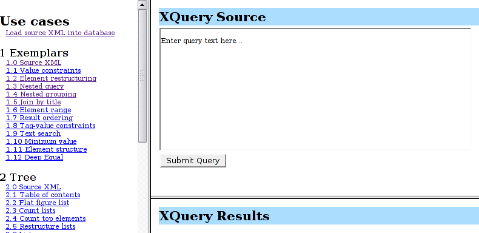

MarkLogic Server includes built-in support for online, transactional backup and restore of both databases and forests. However, the on-disk format of these backups is platform-specific: a backup from Windows IA-32 can't be restored on a Solaris/SPARC server, nor vice versa.
XQSync is an application-level synchronization tool that can copy documents and their metadata between databases. XQSync can also package documents and their metadata as zip archives, or write them directly to a filesystem. XQSync can synchronize an entire database, a collection, a directory, or the results of evaluating an XQuery expression. Finally, XQSync can make some simple changes along the way: it can add a prefix or append a suffix to every document URI, and it can add new read permissions to every document.
Use XQSync when...
XQSync is a Java program, and requires a Java 1.5 environment. If you don't have Java 1.5, download and install it.
Next, we'll need XQSync itself. So download xqsync.jar.
Since XQSync works by connecting to a MarkLogic Server,
you'll need the Mark Logic XCC libraries, too.
You can download the MarkXCC.Java zip archive
here.
Be sure to download the latest XCC for Java release!
After you download the zip archive, unpack it and find the jar files.
You can put xcc.jar anywhere on your disk,
but for this tutorial I'll assume
that both files are in the current directory.
Next, we'll need a Java library called XStream: XQSync uses XStream to serialize and deserialize XML documents as Java objects. You can download XStream here.
Finally, you'll need a copy of XPP3. You can download it from
this site.
Again, be sure to get the latest version: right now, that's
xpp3-1.1.3_8.jar.
Now that we have a Java environment and all the libraries we need, let's try it out with the simplest possible invocation.
Note that the command-line above is for Linux or Unix. For Windows, you'll need to use semicolons in the classpath, instead. Note that the rest of this tutorial will use Linux command-lines: if you're using Windows, just translate the classpath appropriately.
Java command lines can get pretty ugly. I'll keep using them for this tutorial, but you might want to put all of that into a shell script (or a batch file, on Windows). Remember, I put all my jar files in the current directory. You might have used another location: if so, just change the classpath in your command-line to match.
OK, so we copied that command-line and pasted it into a shell. What happened?
Oh, that doesn't look good. Hmm... looks like we forgot to put xqsync.jar into the current directory. We'll do that, and try again...
That looks a little bit better: we see a startup message, at least.
But what about the error? What does
missing required property: INPUT_CONNECTION_STRING mean?
INPUT_CONNECTION_STRING
is the name of a property. In Java, properties are
simply name-value pairs, such as SIZE=1
or PATH=/lib/java.
XQSync uses properties for almost everything,
so let's learn how to configure those properties.
XQSync configures itself by looking at the System properties,
plus any property files that you supply on the command-line.
We'll learn about property files in a minute.
But for now, we just need to decide where our content will come from
(that's the INPUT_CONNECTION_STRING property),
and where it will end up
(that will be the OUTPUT_CONNECTION_STRING property).
Both of these properties will be XCC connection URIs:
XQSync will use them to connect to specific MarkLogic Server instances.
You can also tell XQSync to use zip archives or filesystem directories as its output. Once you've written the contents of a MarkLogic database to an output package, you can then use that same package as the input package, restoring it to an output database.
Let's look at an example: to keep it simple, we'll use the built-in Documents database.
Did you know that MarkLogic Server automatically sets up the W3C XQuery Use-Cases when it installs? If your server is running on your PC or laptop, visit port 8000 to see what I mean.
For convenience, here's a screenshot of the Use Cases application.
To prepare for this example, we'll to do a little more setup.
You will also need an XDBC server.
To set one up, use the MarkLogic Server admin interface,
which runs on port 8001.
Click on Configure < App Servers < Create XDBC,
and fill in the following values:
All other values may be left at the defaults.
Now we are ready to run XQSync. For this example, we will back up the contents of Documents to a filesystem package (a zip archive file), and then restore it to the same Documents database. Note that we could achieve the same effect by using the builtin backup and restore features, but those features don't support cross-platform backup and restore.
In this command-line, we simple tell XQSync where to look for the input
(INPUT_CONNECTION_STRING),
and where to place the content it finds
(OUTPUT_PACKAGE).
When I ran that command-line, here is the output that I saw.
That was fairly easy: we didn't see any errors,
and the last line tells me that 20 documents were synchronized.
Looking at the current directory, I see a new documents.zip.
Every document in my Documents database is represented twice:
the first file contains the document content,
and a .metadata file.
The metadata file contains extra information about the document:
its format, collections, permissions, properties, and quality
are all recorded.
I also see a log file: that contains the output of XQSync.
This can be useful for long-running XQSync tasks,
and for debugging. To increase the verbosity of the log,
we can add LOG_LEVEL to the properties.
Valid log levels are from java.util.logging,
and include DEBUG, FINE, FINDER,
and FINEST.
To restore the zip file, we simply use INPUT_PACKAGE
and OUTPUT_CONNECTION_STRING.
In our simple example, we synchronized the entire Documents database
to an output package. We can also synchronize
by collection, using INPUT_COLLECTION_URI,
or by directory, using INPUT_DIRECTORY_URI.
We can even submit an arbitrary query,
using INPUT_QUERY
- the query must return a sequence of document URIs,
which will be synchronized.
On the output side, we can specify prefixes and suffixes for every URI. We can also specify which Forests will receive the new documents, and add new read-permissions to every document, by role.
If needed, the process may be multithreaded.
Simply set THREADS to the desired number of threads.
XQSync uses a pool of worker threads to synchronize documents. The manager thread performs the input query (or lists the contents of the input package) and queues each document for the workers. In parallel, the workers write any queued documents to the destination. Note that nothing is queued, and work is performed, until the input query has been evaluated and begins to return results. For millions of documents, it may be better to synchronize some subset of the documents. Collections, directories, and ad-hoc queries can all be useful for this purpose.
Zip archives are inherently 32-bit. Thus, if you are synchronizing more than 2GB of XML, XQSync may need to split the work up into multiple archives.
We hope this tutorial was useful. For more information about XQSync, see the README.
NoClassDefFoundError:
Your classpath isn't finding one
of the jar files. Examine it carefully, and make sure the paths are
all accurate.
I'm running Windows, and XQSync is ignoring my
INPUT_PATH or INPUT_PACKAGE property:
Try escaping all the back-slash characters in your path.
For example, change c:\foo to c:\\foo
- alternatively, change back-slashes to forward-slashes.